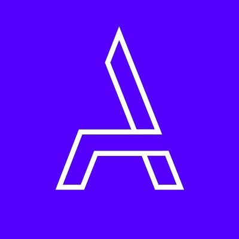

Ramiro Yaben
Desarrollador web frontend, traductor inglés a español
Datos personales
- Nacimiento: 07/08/1993
- Nacionalidad: Argentino
- Domicilio: Puan 260 6B, Buenos Aires
- Estado civil: Soltero
Habilidades generales
Idiomas: Español (nativo), Inglés (fluido), Italiano (básico)
Software: Microsoft Office,
aplicaciones de Google, Jira, Confluence,
Slack, Teams, Trello, GitHub, GitLab, y SOs de Linux.
Contacto


Perfil
Soy un hombre comprometido con enriquecer mis conocimientos, y soy curioso con todo lo que me rodea en el ambiente laboral. Tengo dedicación pura a aprender y crecer, y a cambiar cuando sea y lo que sea necesario. Me gusta ser organizado y responsable para poder sentirme satisfecho con mi trabajo, y si no lo estoy, tengo la capacidad de reflexión y autocrítica para ver o escuchar esa observación de otros colegas. Absorbo mucho de mis pares, y me beneficio enormemente de una buena atmósfera laboral, a la cual definitivamente contribuyo mucho.
Estoy buscando un lugar en el que pueda aprender y desarrollarme profesionalmente, en el que ambas partes valoren a la otra por sus características.
Soy competitivo y muy deportivo, especialmente cuando se trata de fútbol. También me gusta cantar, escribir, y sacar fotos alternativas, incluso cuando no soy el mejor en ello. Amante del cine y consumidor de series. Disfruto de un buen café o un buen vino. Ansioso de continuar viajando y descubriendo las culturas, comidas y paisajes que ofrece el mundo.
Formación académica

Desarrollo web full-stack en Acámica
2019-2020
Estudié lenguajes frontend como HTML5, CSS3 y JavaScript con jQuery, y de backend tales como Node.js para manejo de servidor y mySQL para base de datos.

English Proficiency
Certification at Duolingo
2015 (aprobado, 100/100 score)
Destacado examen que valida conocimiento en inglés como segundo idioma (equivalente al IELTS), respaldado por Upwork y universidades de EEUU.
Licenciatura en Ciencia Política en
Universidad de Buenos Aires
2014-2018 (abandonada), 13 materias aprobadas (incluyendo CBC).
Experiencia laboral
Traductor freelance de inglés a español en Upwork
2014-actualidad
Traducciones de contenido general, con especialización en interfaces web y móviles.
Especialista data-entry en DataAnnotation
2024-actualidad
Testeo de IAs, que involucra interacciones para determinar el contenido de mejor calidad. Parte de este testeo incluye
pruebas relacionadas al desarrollo web.
Desarrollador web frontend at Viseven
2021-2024
Comencé como desarrollador frontend, trabajando con Vue.js 3 en presentaciones digitales web. Luego fui promovido a
Team Lead, una posición que incluyó responsabilidades como administrar al equipo de desarrollo y
cooperar con Project Managers.
Agente de recaudación de fondos en Agencia Proa
2018
Presencia en la vía pública entablando conversaciones con los peatones con el fin de asociarlos
como donantes para la organización, también cumplimiento de tareas administrativas básicas.
Cadete administrativo en Ecolatina
2017-2018
Encargado de varias tareas administrativas de la empresa, como cobro y depósito de cheques, realización de pagos y cobros a clientes, y entregas y envíos con diferentes tópicos y motivos.